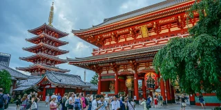

東京
Tokyo
35.6762° N, 139.6503° E
the most populous metro area in the world
the seat of the ceremonial emperor of its nation
the host of the 1964 and 2020 Summer Olympics
the city with the most Michelin stars
a city whose name means eastern capital


皇居
Imperial Palace
1968
1855
